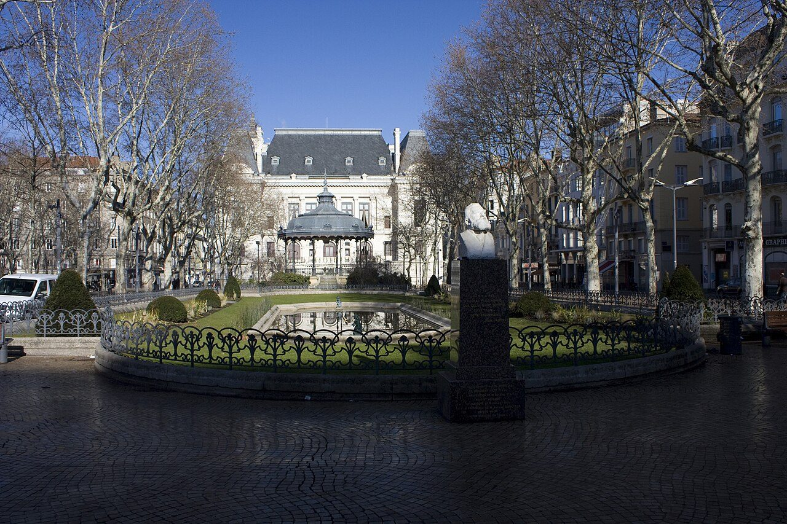
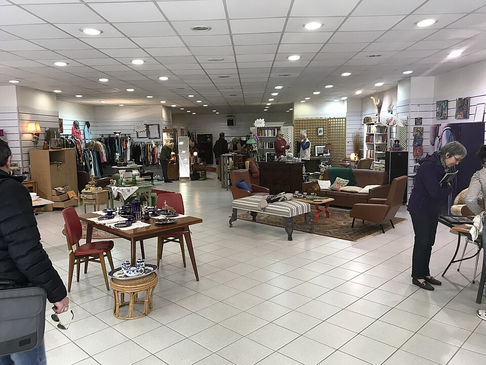
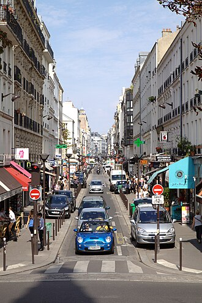
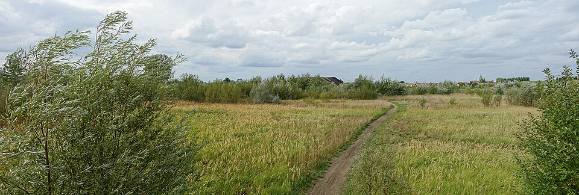
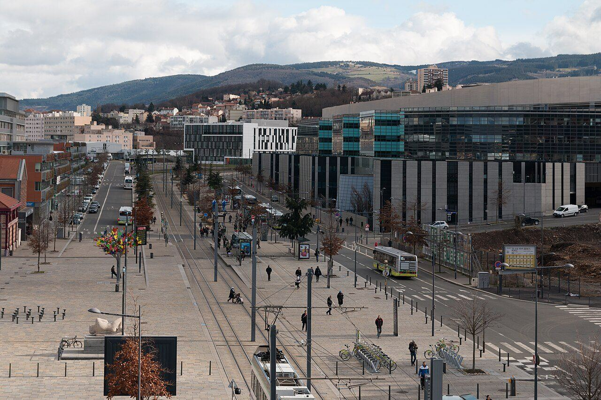

Organisation
Cinq pôles pour couvrir tout le cycle de revitalisation.
Les pôles structurent l'action de TVF : repérer un lieu ou une ressource, comprendre le besoin, mobiliser les bons acteurs, préparer un cadre écrit et suivre le retour à l'usage.
Fondation
Une organisation lisible pour passer de l'idée au terrain
Les pôles ne sont pas des silos. Ils permettent de répartir les responsabilités, de clarifier les sujets à traiter et d'éviter qu'un projet reste bloqué parce qu'il manque un propriétaire, un usage, des matériaux, une collectivité, un financement ou une équipe locale.
Repères
Les pôles TVF
Chaque pôle apporte une compétence précise au service d'un même objectif : remettre en usage ce qui peut redevenir utile.
Habitat Vivant
Logements vacants, habitat dégradé, propriétaires, occupation temporaire, usages solidaires.
DécouvrirMatériauthèque Solidaire
Matériaux réemployables, collecte, diagnostic, stockage, affectation à des projets validés.
DécouvrirCommerce Vivant
Locaux fermés, vitrines inactives, artisans, services de proximité et usages temporaires.
Friches & Terrains Vivants
Terrains délaissés, espaces verts, jardins partagés, biodiversité et nouveaux usages collectifs.
Solidarité & Insertion
Bénévolat, missions encadrées, formation, participation citoyenne et inclusion.
DécouvrirCadre
Rôle détaillé de chaque pôle
Chaque pôle doit produire des informations utiles à la décision, pas seulement une intention.
| Pôle | Pourquoi il existe | Missions principales | Livrables possibles |
|---|---|---|---|
| Habitat Vivant | Des biens restent inutilisés alors que les besoins locaux existent | Qualifier le bien, dialoguer avec le propriétaire, étudier les usages | Fiche propriétaire, scénarios, accord de principe |
| Matériauthèque Solidaire | Des ressources encore utiles sortent des circuits de projet | Recenser, trier, sécuriser et affecter les matériaux | Bordereau, registre, PV de remise |
| Commerce Vivant | Des locaux fermés fragilisent les rues et les centres-villes | Comprendre le local, tester des usages, relier porteurs et acteurs locaux | Fiche local, scénario d'usage, convention |
| Friches & Terrains Vivants | Des espaces délaissés peuvent devenir utiles au cadre de vie | Qualifier l'accès, les risques, les usages verts ou partagés | Audit terrain, note d'opportunité, plan d'action |
| Solidarité & Insertion | Les projets locaux peuvent créer de l'engagement et des parcours | Cadrer les missions, encadrer les actions, suivre la participation | Fiche mission, émargement, compte rendu |

Approche
Habitat Vivant
Ce pôle s'adresse d'abord aux propriétaires, collectivités et habitants confrontés à des logements vacants, dégradés ou sans usage clair. TVF ne promet pas une rénovation immédiate : l'objectif est de qualifier le bien, comprendre les contraintes, identifier les usages réalistes et préparer un cadre de coopération.

Approche
Matériauthèque Solidaire
Ce pôle transforme les matériaux disponibles en ressources de projet. Une porte, du bois, du carrelage, du mobilier ou un équipement technique ne sont utiles que s'ils sont identifiés, stockables, sécurisés et affectés à un usage concret.

Approche
Commerce Vivant
Ce pôle travaille sur les vitrines fermées, locaux vacants et rez-de-chaussée sans activité. L'objectif est de préparer des usages réalistes : activité de proximité, artisanat, association, atelier, service, occupation temporaire ou expérimentation locale.

Approche
Friches & Terrains Vivants
Ce pôle regarde les espaces délaissés comme des réserves d'usage possible : jardin partagé, espace pédagogique, lieu associatif, biodiversité, équipement temporaire ou projet territorial. La sécurité, l'accès et la propriété restent toujours les premiers points à vérifier.

Approche
Solidarité & Insertion
Ce pôle permet aux habitants, bénévoles, associations et publics accompagnés de participer à des actions utiles sans improvisation. Les missions doivent être claires, encadrées, sécurisées et documentées.

Approche
Une logique de coopération
Un même projet peut mobiliser plusieurs pôles. Un logement vacant peut nécessiter des matériaux de réemploi, une convention avec un propriétaire, un appui de collectivité, un chantier encadré et un suivi d'impact. TVF sert à organiser cette coordination étape par étape.
Méthode
Comment les pôles travaillent ensemble
Repérage
Un lieu, une ressource ou un besoin est identifié.
Pôle principal
TVF choisit le pôle qui porte l'analyse principale.
Pôles associés
Les autres pôles complètent : matériaux, insertion, commerce, friche ou habitat.
Cadre écrit
Convention, autorisation, budget, sécurité et responsabilités sont préparés.
Action suivie
Les résultats ne sont publiés qu'après réalisation et vérification.
FAQ
Questions fréquentes
Des réponses courtes pour comprendre le cadre TVF sans jargon.
Pourquoi organiser TVF en pôles ?
Les pôles rendent la méthode lisible. Ils permettent de traiter séparément l'habitat, les commerces, les friches, les matériaux et l'engagement humain, tout en les reliant dans un même projet.
Un projet peut-il relever de plusieurs pôles ?
Oui. C'est même fréquent : un bâtiment vacant peut mobiliser Habitat Vivant, Matériauthèque Solidaire, Solidarité & Insertion et parfois Commerce Vivant.
Qui décide du pôle principal ?
TVF l'identifie après qualification du besoin, des contraintes, des acteurs et de l'usage envisagé.
Les pôles correspondent-ils à des résultats déjà obtenus ?
Non. Ils structurent la méthode et les futurs dossiers. Les résultats seront communiqués uniquement lorsqu'ils seront vérifiés.
Passer à l'étape suivante
Vous avez un bien, une ressource ou un besoin territorial ?
Présentez la situation à TVF pour préparer un premier échange clair et utile.